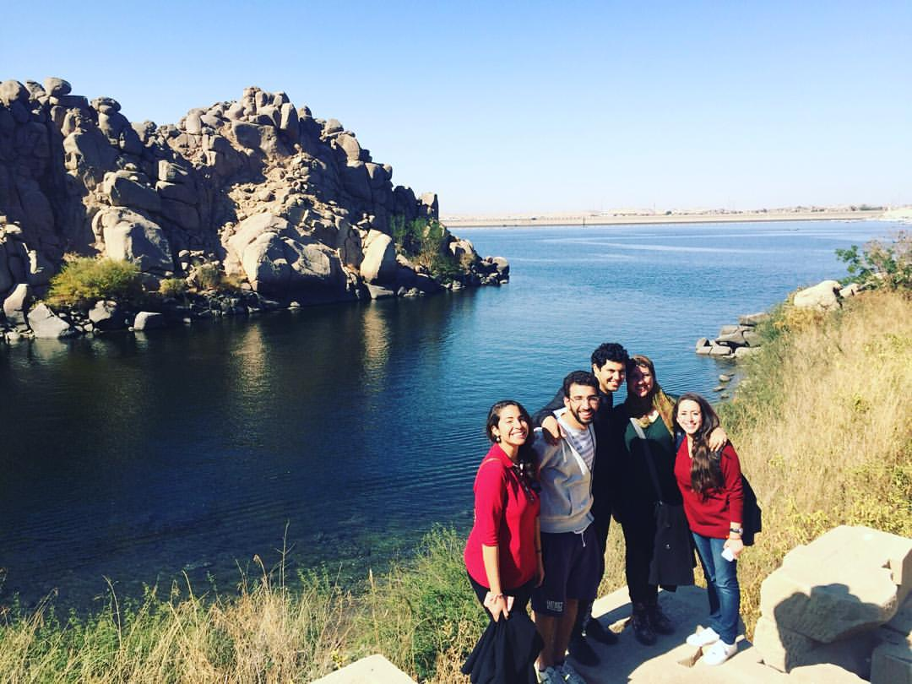
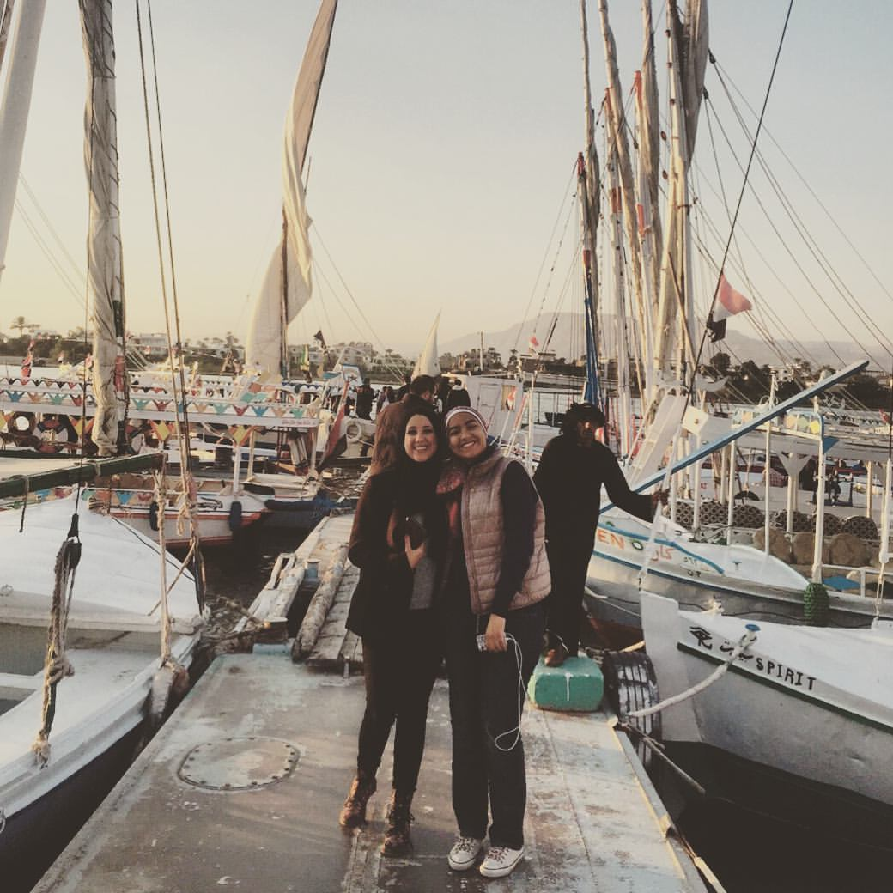
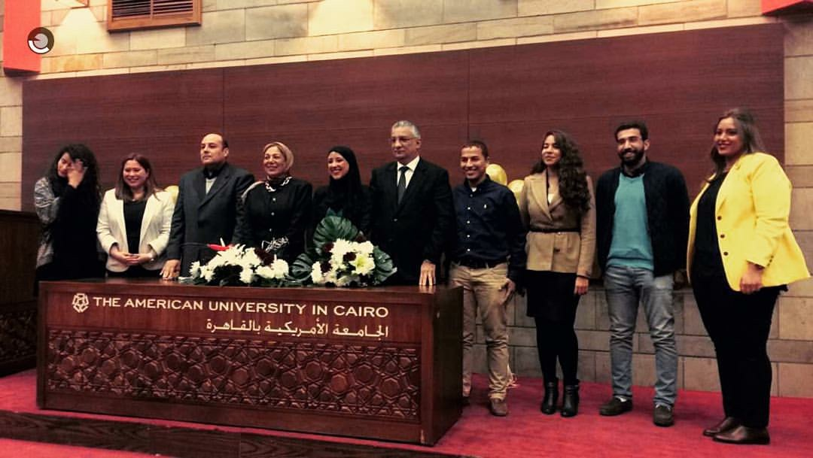
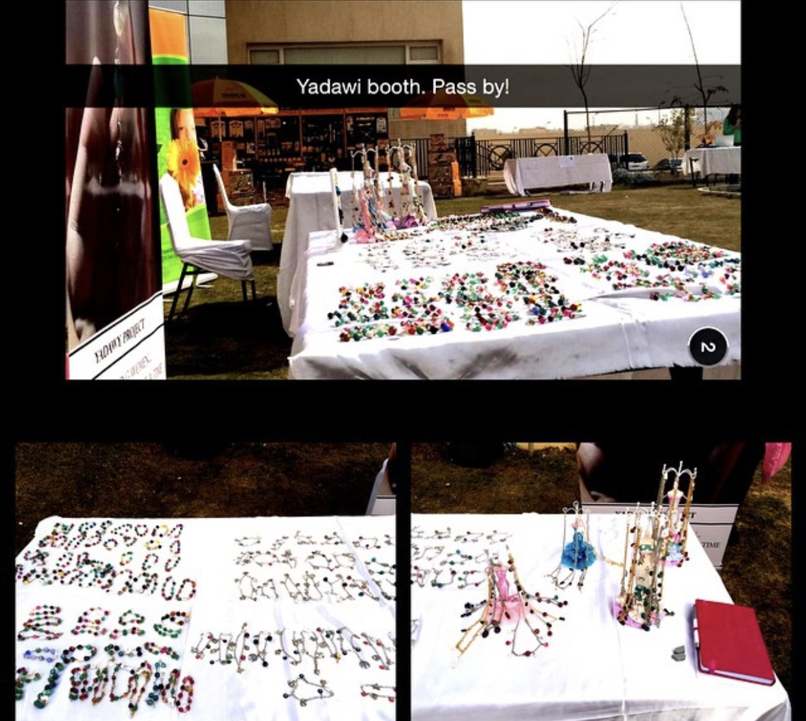

Yadawi | Cairo International Model UN
Empowered women in vulnerable situations by teaching them the jewelery making craft
As the Secretary General of the 27th Cairo International Model United Nations (CIMUN), I sought out to bring back an old project which in an attempt to simulate the UN Development program empowered women in vulnerable situations. Yadawi - which means handy work- taught women how to create their own brand identity in the jewellery making craft and taught them color coordination, marketing and resource handling. As part of my job to oversee the operations of CIMUN - alongside the graduate advisor, Rana Shafik, and the operations committees head, Hesham Sadek, we envisioned Yadawi led by Sherouk Badr and Nada BAraaka and succeeded to help many women. — The End.

{kind=link}
![ Faces of Nubia | The Holiday -2- Creating a library and a community centre in an island in Nubia As the chair of Human Resources and Development in the American University in Cairo, alongside Aleya Farhoud and Pakinam Elgohary, we led a team of 30 people to travel for a cause for their winter break and to spend their New Year's break doing something meaningful. We travelled 532 miles by train and 1 hour by boat carrying the paint, the stencils to draws on the walls and most importantly lots and lots of books.— To Be Continued ...](../images/rh/social/nubia2.jpg){kind=link}
![ Faces of Nubia | The Holiday -3- Creating a library and a community centre in an island in Nubia Nubia is a region between Aswan in Egypt and Khartoum in Sudan. Eversince the building of Aswan Dam, the status of the region has been dwindling. Forced to relocate from thier houses, part of the population was internally displaced. Access to basic services is limited on some of the islands, but the beauty of the nature and smartness of the people has led tourism to expand. However, many NGOs have accepted the call for action and started delivering many educational and building services for Nubia. This project aimed at delivering an educational/recreational service to one of the islands.— To Be Continued ...](../images/rh/social/nubia3.jpg){kind=link}
{kind=link}
{kind=link}
{kind=link}
{kind=link}
{kind=link}
![ SU NAWARNI -2- Providing a series of workshops for kids living in orphanages American University in Cairo has a huge portfolio of student run conferences including ISLC for leadership skills, AIESEC for work and travel experiences, Entrepreneurs' Society for entrepreneurial skills and ICGE for political and economic development. SU Nawarni created a collaboration framework for all these confrences to deliver their content in arabic instead of english to the kids that Nawarni sponsored. In this photo, the minister of socialdevelopment in Egypt is attending the opening and delivering a speech for the kids.— To Be Continued ...](../images/rh/social/nawarni2.jpg){kind=link}
{kind=link}
![ Yadawi | Cairo International Model UN Empowered women in vulnerable situations by teaching them the jewelery making craft As the Secretary General of the 27th Cairo International Model United Nations (CIMUN), I sought out to bring back an old project which in an attempt to simulate the UN Development program empowered women in vulnerable situations. Yadawi - which means handy work- taught women how to create their own brand identity in the jewellery making craft and taught them color coordination, marketing and resource handling. As part of my job to oversee the operations of CIMUN - alongside the graduate advisor, Rana Shafik, and the operations committees head, Hesham Sadek, we envisioned Yadawi led by Sherouk Badr and Nada BAraaka and succeeded to help many women. — The End.](../images/rh/social/yadawi1.jpg){kind=link}